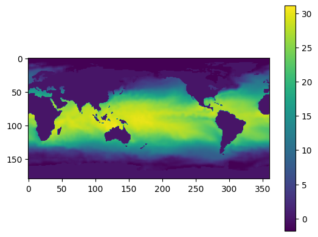
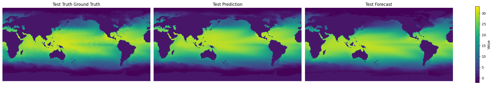

SINDy-SHRED Tutorial on Sea Surface Temperature#
%load_ext autoreload
%autoreload 2
Import Libraries#
# PYSHRED
from pyshred import DataManager, SHRED, SHREDEngine, SINDy_Forecaster
# Other helper libraries
import matplotlib.pyplot as plt
from scipy.io import loadmat
import torch
import numpy as np
Load in SST Data#
mat = loadmat("SST_data.mat")
sst_data = mat['Z'].T
sst_data = sst_data.reshape(1400, 180, 360)
sst_data.shape
(1400, 180, 360)
# Plotting a single frame
plt.figure()
plt.imshow(sst_data[0])
plt.colorbar()
plt.show()

Initialize Data Manager#
manager = DataManager(
lags = 52,
train_size = 0.8,
val_size = 0.1,
test_size = 0.1,
)
Add datasets and sensors#
manager.add_data(
data = sst_data,
id = "SST",
random = 50,
# mobile=,
# stationary=,
# measurements=,
compress=False,
)
Analyze sensor summary#
manager.sensor_summary_df
| data id | number | type | loc/traj | |
|---|---|---|---|---|
| 0 | SST | 0 | stationary (random) | (75, 91) |
| 1 | SST | 1 | stationary (random) | (90, 153) |
| 2 | SST | 2 | stationary (random) | (65, 138) |
| 3 | SST | 3 | stationary (random) | (154, 67) |
| 4 | SST | 4 | stationary (random) | (172, 204) |
| 5 | SST | 5 | stationary (random) | (49, 124) |
| 6 | SST | 6 | stationary (random) | (110, 164) |
| 7 | SST | 7 | stationary (random) | (164, 88) |
| 8 | SST | 8 | stationary (random) | (96, 178) |
| 9 | SST | 9 | stationary (random) | (128, 183) |
| 10 | SST | 10 | stationary (random) | (34, 325) |
| 11 | SST | 11 | stationary (random) | (175, 141) |
| 12 | SST | 12 | stationary (random) | (11, 226) |
| 13 | SST | 13 | stationary (random) | (39, 211) |
| 14 | SST | 14 | stationary (random) | (151, 153) |
| 15 | SST | 15 | stationary (random) | (144, 151) |
| 16 | SST | 16 | stationary (random) | (48, 187) |
| 17 | SST | 17 | stationary (random) | (52, 359) |
| 18 | SST | 18 | stationary (random) | (138, 85) |
| 19 | SST | 19 | stationary (random) | (9, 157) |
| 20 | SST | 20 | stationary (random) | (13, 171) |
| 21 | SST | 21 | stationary (random) | (54, 273) |
| 22 | SST | 22 | stationary (random) | (159, 220) |
| 23 | SST | 23 | stationary (random) | (105, 87) |
| 24 | SST | 24 | stationary (random) | (74, 107) |
| 25 | SST | 25 | stationary (random) | (124, 284) |
| 26 | SST | 26 | stationary (random) | (129, 344) |
| 27 | SST | 27 | stationary (random) | (11, 334) |
| 28 | SST | 28 | stationary (random) | (130, 140) |
| 29 | SST | 29 | stationary (random) | (119, 144) |
| 30 | SST | 30 | stationary (random) | (145, 285) |
| 31 | SST | 31 | stationary (random) | (115, 280) |
| 32 | SST | 32 | stationary (random) | (31, 231) |
| 33 | SST | 33 | stationary (random) | (88, 58) |
| 34 | SST | 34 | stationary (random) | (83, 249) |
| 35 | SST | 35 | stationary (random) | (178, 244) |
| 36 | SST | 36 | stationary (random) | (47, 199) |
| 37 | SST | 37 | stationary (random) | (174, 77) |
| 38 | SST | 38 | stationary (random) | (74, 143) |
| 39 | SST | 39 | stationary (random) | (63, 178) |
| 40 | SST | 40 | stationary (random) | (23, 124) |
| 41 | SST | 41 | stationary (random) | (71, 221) |
| 42 | SST | 42 | stationary (random) | (51, 196) |
| 43 | SST | 43 | stationary (random) | (153, 307) |
| 44 | SST | 44 | stationary (random) | (41, 133) |
| 45 | SST | 45 | stationary (random) | (28, 336) |
| 46 | SST | 46 | stationary (random) | (6, 25) |
| 47 | SST | 47 | stationary (random) | (160, 86) |
| 48 | SST | 48 | stationary (random) | (69, 103) |
| 49 | SST | 49 | stationary (random) | (149, 298) |
manager.sensor_measurements_df
| data id | SST-0 | SST-1 | SST-2 | SST-3 | SST-4 | SST-5 | SST-6 | SST-7 | SST-8 | SST-9 | ... | SST-40 | SST-41 | SST-42 | SST-43 | SST-44 | SST-45 | SST-46 | SST-47 | SST-48 | SST-49 |
|---|---|---|---|---|---|---|---|---|---|---|---|---|---|---|---|---|---|---|---|---|---|
| 0 | 27.469999 | 29.429999 | 23.279999 | 0.00 | -0.0 | 0.0 | 26.519999 | -0.0 | 29.949999 | 18.47 | ... | -0.0 | 23.669999 | 13.52 | -0.07 | 0.0 | 7.71 | -1.42 | -0.0 | 0.0 | 5.09 |
| 1 | 26.969999 | 29.659999 | 22.979999 | 0.05 | -0.0 | 0.0 | 27.229999 | -0.0 | 29.889999 | 18.51 | ... | -0.0 | 23.459999 | 13.38 | -0.04 | 0.0 | 7.58 | -1.20 | -0.0 | 0.0 | 4.97 |
| 2 | 26.179999 | 29.749999 | 22.629999 | 0.01 | -0.0 | 0.0 | 27.949999 | -0.0 | 29.839999 | 19.14 | ... | -0.0 | 23.419999 | 12.65 | -0.07 | 0.0 | 7.13 | -1.05 | -0.0 | 0.0 | 5.57 |
| 3 | 26.309999 | 29.199999 | 21.990000 | -0.01 | -0.0 | 0.0 | 27.829999 | -0.0 | 29.649999 | 19.19 | ... | -0.0 | 23.029999 | 12.90 | 0.05 | 0.0 | 7.21 | -0.75 | -0.0 | 0.0 | 6.00 |
| 4 | 26.719999 | 29.119999 | 22.429999 | -0.02 | -0.0 | 0.0 | 27.679999 | -0.0 | 29.169999 | 19.59 | ... | -0.0 | 23.219999 | 12.70 | 0.17 | 0.0 | 7.30 | -0.77 | -0.0 | 0.0 | 5.62 |
| ... | ... | ... | ... | ... | ... | ... | ... | ... | ... | ... | ... | ... | ... | ... | ... | ... | ... | ... | ... | ... | ... |
| 1395 | 29.109999 | 29.909999 | 28.679999 | -1.74 | -0.0 | 0.0 | 24.329999 | -0.0 | 29.749999 | 14.17 | ... | 0.0 | 26.669999 | 21.35 | -0.98 | 0.0 | 11.19 | -1.47 | -0.0 | 0.0 | -0.54 |
| 1396 | 29.049999 | 30.049999 | 28.689999 | -1.65 | -0.0 | 0.0 | 25.209999 | -0.0 | 29.739999 | 14.45 | ... | 0.0 | 26.409999 | 21.20 | -0.99 | 0.0 | 10.40 | -1.30 | -0.0 | 0.0 | -0.34 |
| 1397 | 29.239999 | 30.269999 | 28.869999 | -1.45 | -0.0 | 0.0 | 24.659999 | -0.0 | 29.929999 | 14.91 | ... | 0.0 | 26.599999 | 19.85 | -0.80 | 0.0 | 9.84 | -1.28 | -0.0 | 0.0 | -0.49 |
| 1398 | 29.589999 | 30.329999 | 28.999999 | -1.50 | -0.0 | 0.0 | 24.879999 | -0.0 | 29.839999 | 15.03 | ... | 0.0 | 26.599999 | 18.45 | -0.99 | 0.0 | 9.53 | -1.30 | -0.0 | 0.0 | -0.84 |
| 1399 | 29.199999 | 30.429999 | 28.679999 | -1.57 | -0.0 | 0.0 | 24.799999 | -0.0 | 30.029999 | 15.54 | ... | 0.0 | 26.489999 | 18.15 | -1.20 | 0.0 | 9.34 | -1.34 | -0.0 | 0.0 | -0.75 |
1400 rows × 50 columns
Get train, validation, and test set#
train_dataset, val_dataset, test_dataset= manager.prepare()
Initialize a latent forecaster#
latent_forecaster = SINDy_Forecaster(poly_order=1, include_sine=True, dt=1/5)
Initialize SHRED#
shred = SHRED(sequence_model="GRU", decoder_model="MLP", latent_forecaster=latent_forecaster)
Fit SHRED#
val_errors = shred.fit(train_dataset=train_dataset, val_dataset=val_dataset, num_epochs=10, sindy_thres_epoch=20, sindy_regularization=1)
print('val_errors:', val_errors)
Fitting SindySHRED...
Epoch 1: Average training loss = 0.113462
Validation MSE (epoch 1): 0.035907
Epoch 2: Average training loss = 0.050084
Validation MSE (epoch 2): 0.017119
Epoch 3: Average training loss = 0.025530
Validation MSE (epoch 3): 0.017065
Epoch 4: Average training loss = 0.022404
Validation MSE (epoch 4): 0.015441
Epoch 5: Average training loss = 0.022002
Validation MSE (epoch 5): 0.014016
Epoch 6: Average training loss = 0.021343
Validation MSE (epoch 6): 0.013516
Epoch 7: Average training loss = 0.020509
Validation MSE (epoch 7): 0.013060
Epoch 8: Average training loss = 0.019463
Validation MSE (epoch 8): 0.012592
Epoch 9: Average training loss = 0.018733
Validation MSE (epoch 9): 0.012087
Epoch 10: Average training loss = 0.017903
Validation MSE (epoch 10): 0.011690
val_errors: [0.03590691 0.01711907 0.01706486 0.01544069 0.01401623 0.01351578
0.01306047 0.01259177 0.01208725 0.01168976]
Evaluate SHRED#
train_mse = shred.evaluate(dataset=train_dataset)
val_mse = shred.evaluate(dataset=val_dataset)
test_mse = shred.evaluate(dataset=test_dataset)
print(f"Train MSE: {train_mse:.3f}")
print(f"Val MSE: {val_mse:.3f}")
print(f"Test MSE: {test_mse:.3f}")
Train MSE: 0.010
Val MSE: 0.012
Test MSE: 0.017
SINDy Discovered Latent Dynamics#
print(shred.latent_forecaster)
(x0)' = 0.008 1 + -0.047 x0 + -0.026 x1 + 0.006 x2
(x1)' = -0.041 1 + -0.174 x0 + 0.578 x1 + 0.588 x2
(x2)' = 0.144 1 + 0.080 x0 + -0.939 x1 + -0.593 x2
Initialize SHRED Engine for Downstream Tasks#
engine = SHREDEngine(manager, shred)
Sensor Measurements to Latent Space#
test_latent_from_sensors = engine.sensor_to_latent(manager.test_sensor_measurements)
Forecast Latent Space (No Sensor Measurements)#
engine.model.latent_forecaster
SINDy_Forecaster()
val_latents = engine.sensor_to_latent(manager.val_sensor_measurements)
init_latents = val_latents[-1] # seed forecaster with final latent space from val
t = len(manager.test_sensor_measurements)
test_latent_from_forecaster = engine.forecast_latent(t=t, init_latents=init_latents)
Decode Latent Space to Full-State Space#
test_prediction = engine.decode(test_latent_from_sensors) # latent space generated from sensor data
test_forecast = engine.decode(test_latent_from_forecaster) # latent space generated from latent forecasted (no sensor data)
Compare final frame in prediction and forecast to ground truth:
truth = sst_data[-1]
prediction = test_prediction['SST'][t-1]
forecast = test_forecast['SST'][t-1]
data = [truth, prediction, forecast]
titles = ["Test Truth Ground Truth", "Test Prediction", "Test Forecast"]
vmin, vmax = np.min([d.min() for d in data]), np.max([d.max() for d in data])
fig, axes = plt.subplots(1, 3, figsize=(20, 4), constrained_layout=True)
for ax, d, title in zip(axes, data, titles):
im = ax.imshow(d, vmin=vmin, vmax=vmax)
ax.set(title=title)
ax.axis("off")
fig.colorbar(im, ax=axes, label="Value", shrink=0.8)
<matplotlib.colorbar.Colorbar at 0x2ae5e385990>

Evaluate MSE on Ground Truth Data#
# Train
t_train = len(manager.train_sensor_measurements)
train_Y = {'SST': sst_data[0:t_train]}
train_error = engine.evaluate(manager.train_sensor_measurements, train_Y)
# Val
t_val = len(manager.test_sensor_measurements)
val_Y = {'SST': sst_data[t_train:t_train+t_val]}
val_error = engine.evaluate(manager.val_sensor_measurements, val_Y)
# Test
t_test = len(manager.test_sensor_measurements)
test_Y = {'SST': sst_data[-t_test:]}
test_error = engine.evaluate(manager.test_sensor_measurements, test_Y)
print('---------- TRAIN ----------')
print(train_error)
print('\n---------- VAL ----------')
print(val_error)
print('\n---------- TEST ----------')
print(test_error)
---------- TRAIN ----------
MSE RMSE MAE R2
dataset
SST 0.617007 0.785498 0.426965 0.41722
---------- VAL ----------
MSE RMSE MAE R2
dataset
SST 0.744356 0.862761 0.459704 -0.394776
---------- TEST ----------
MSE RMSE MAE R2
dataset
SST 1.229534 1.108844 0.622832 -0.556659